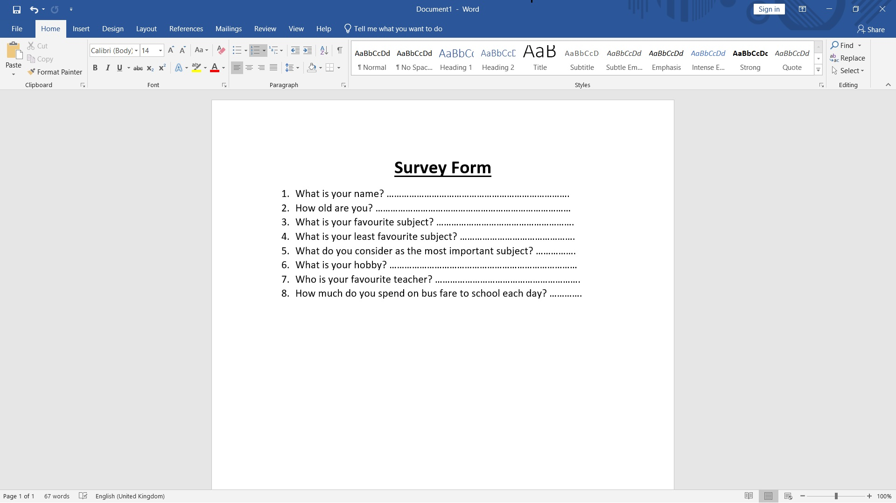
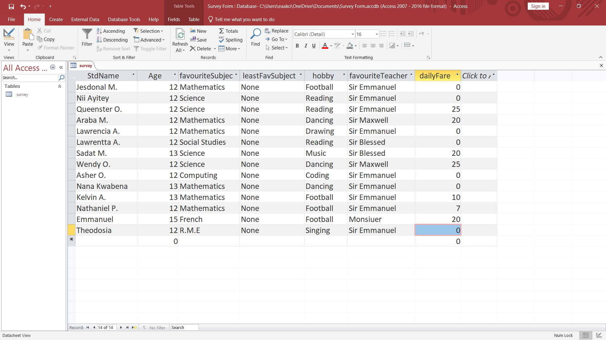

Designing Forms
Say, a school wanted to know about its students' likes and their experiences in the school. We can use a text editing software like Microsoft Office Word to create a questionnaire as below:

Take a minute or two to search on the internet what other text editing softwares you can use to create a questionnaire.
Organising the Data
Once the questionnaire has been filled by the students, we will need to organise the data into meaningful information to enable us to make informed decisions.
We can use programs such as Microsoft Office Excel or Microsoft Office Access to tabulate the data gotten.
